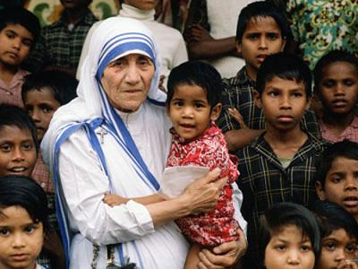

En la radio promovemos estos valores:
Los Valores del principio de la Vida. Promoción y defensa de la vida:
En un contexto social mundial de empobrecimiento progresivo de una mayoría de la población, y específicamente en nuestro país, el principio rector primordial de nuestras opciones y relaciones sociales es el valor de la VIDA, en su especificidad material de cuerpos y de personas; todos lo demás valores y principios se apoyan en este primer fundamento y sin ella carecen de sentido.
Los valores del Principio de Justicia Verdad. Honestidad:
Promovemos la búsqueda de la verdad que inspira la función social de la radio comunitaria. Todo el equipo humano de la radio está comprometido en escuchar todas las voces del Bañado de modo que todas las personas, grupos e instituciones presentes en el territorio accedan al derecho de comunicación, expresen sus inquietudes y necesidades. La radio en este contexto, se esfuerza en buscar, aceptar, amar, vivir y transmitir la verdad, sólo de esta manera podremos formar a la audiencia con honestidad.
Equidad:
La radio busca una mayor participación de los empobrecidos de este territorio y de otros ciudadanos sean éstos urbanos o rurales de nuestro país dando la posibilidad de sus voces sean escuchadas y reconocidas, den a conocer sus intereses y necesidades colectivas vitales para su desarrollo social.
Valores del principio Hacer el Bien Solidaridad:
La solidaridad se expresa en la acciones. Queremos hacer radio cerca de la gente participando y amplificando sus sueños no sólo con los oyentes sino con los pobladores como activos participantes. Nuestra propuesta es dar la mano, no solo una de ellas sino las dos para caminar juntos sin discriminación.
Dignidad:
La dignidad y la dignificación de las personas es nuestro mayor desafío por ello promovemos la conciencia de la dignidad del ser humano y la vigencia de un estado social de derecho que proteja los derechos individuales, económicos y sociales.
Prudencia:
La radio se esforzará para que este valor gobierne, dirija, guíe su contacto institucional con la audiencia. Mantendrá una prudente discreción con respecto a las cuestiones de las que tome conocimiento en el marco de su función que podrían generar conflictos en desmedro al respeto de la diferencia de credos religiosos, y de cualquier otra cuestión que entrañe discriminación.